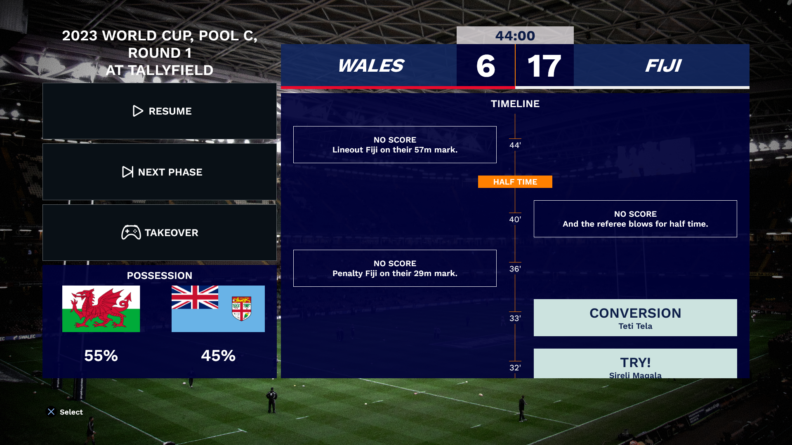

JLR Alpha 12
United Rugby Championship!! üáÆüáπüè¥Û†ÅßۆŢۆÅ≥ۆţۆťۆÅøüáÆüá™üè¥Û†ÅßۆŢۆÅ∑ۆŨۆÅ≥Û†Åøüáøüá¶
The biggest Tier 1 club competition is in full swing, and now you can play it in Jonah Lomu Rugby too.

It's created by me, Chris from New Zealand.
Back me on Patreon to try it out for yourself.
Become a PatronCheck out my Instagram for gameplay videos.
United Rugby Championship!! üáÆüáπüè¥Û†ÅßۆŢۆÅ≥ۆţۆťۆÅøüáÆüá™üè¥Û†ÅßۆŢۆÅ∑ۆŨۆÅ≥Û†Åøüáøüá¶
The biggest Tier 1 club competition is in full swing, and now you can play it in Jonah Lomu Rugby too.
Bonjour and Happy New Year!
This month brings the French Top 14 to Jonah Lomu Rugby.
Top 14!
Changed bonus point system to also support getting a Loss Bonus Point for a margin of only 5 or less.
Changed bonus point system to also support getting a Try bonus point for scoring 3 more tries than your opponent.
Changed playoff system to support 6 teams in the playoffs. The top 2 teams get a Bye in the first round of the playoffs.
Updated the Launcher to support a new file.
Updated the Launcher to look for the file in the Downloads folder and automatically load it if found.
This month's release is the all-new Territories Cup! Read on to see all the details.
Fusion Cup.

Americas Cup.
European Cup.
Extraordinary Cup.
In addition to the 6 Nations and Rugby Championship, I've added European Cup, Americas Cup and Pasifika Cup.
Now, just like the original game, you need to win all the Territories Cups to unlock two special tournaments, which I'm calling the Fusion Cup and the Extraordinary Cup.
The Fusion Cup is contested by teams made up of players from multiple countries: the B&I Lions, Barbarians, Pacific Islanders and South American XV.
The Extraordinary Cup, like the original game has a few fictional teams along with the World XV.
Available right away:
Unlockable:
Winning the Fusion or Extraordinary Cup with a team will unlock that team for use in Friendlies.
Added a trophy icon every time you win a Territories Cup.
Congratulations South Africa, World Cup Champions for the 4th time! üéâ
We are celebrating the end of the World Cup by adding all of the World Cup Champions to JLR!
Celebrate the World Cup champions by participating in an epic Champions Tournament.
Take part in a round-robin competition, Semi finals & Final
10 new teams that have made their mark in World Cup history, including the latest 2023 champions, South Africa.
Winning the Champions Tournament with a team will unlock that team for use in Friendlies.
After 2 months of adding teams and tournaments, this month I am back to adding features.
The focus of this release is Management.
I'm bringing Live Sim to JLR! This is a feature I've been wanting to build for a long time.
Live sim means that you can simulate a game while watching the progress. At any point in the 2nd half you can choose to take over control of the game, and influence the end of the match. You can pause and manually progress the Sim. The live Sim shows the result of each phase and which player scored. It also shows possession stats as the game progresses.
Live Sim screen.
Want to move Ardie Savea back to 7? Do you think Robbie Henshaw is better at inside centre?
Now you can select which position the players play.
E.g. if you put a prop on the wing their ratings will drop significantly due to their lack of speed.
There's nothing stopping you though!
Select players screen.
No new features in this one.
JLR Alpha 7.1 is a bug fix release that addresses an issue where the game crashes on load for some users.
I also got the French forward pack mixed up, which I have fixed.
Thanks to Patron Axel for reporting these bugs.
The World Cup release!
It's September and the World Cup is right around the corner and now you can play it in JLR!
This release has a massive, 24 new teams!

World Cup teams.
All teams have both home and away jerseys.
I also updated the Tier 1 teams to their World Cup squads.
Added 14 Auckland Club rugby teams. (Thank you Brad R for all your help!)
Club team select screen.
Winning the 2023 World Cup unlocks the 2015 World Cup winning NZ team.
The International release!

International team select screens.
No new features in this one.
JLR Alpha 5.1 is a bug fix release that addresses an issue where Tournaments or Territories Cups may not record as being won in some cases.
Thanks to Patron Glen for reporting this bug.
It's that time again! In this new version I have focussed on Territories Cup mode and unlockables.
Territories Cup screen.
Added all Original Territories Cup tournaments.
Added a selection of new Derby Cup tournaments.
The new feature in this release is Classic Matches!
Classic match screen.
No new features in this one. I've fixed a bug that the legend Bronson made me aware of yesterday.
The focus of this release has been Tournaments! üèÜüèÜüèÜüèÜ
Tournament overview screen.
The focus of this release has been the controllers üéÆüéÆ.
New player select screen.
The first release of the JLR mod. This is an exciting day for me. Hopefully for you too.
Because this is a mod and not a new game, it preserves what made the game great: the beloved commentary and the fast and simple gameplay. While enhancing a few features that were stuck in 1997: the ability to play on modern PCs, the teams, players and the limited menu system.
New team select screen.
This is not a subscription. There are no logins to the game mod and no DRM! So you can keep on playing the version you have. Feel free to dip in and out.
You can stay connected by going on the cheapest tier or simply cancel and then renable when you see a feature or a team you like has been added. Patreon makes it pretty easy to switch between tiers or cancel and then renable support later. Supporting me monthly simply means you get the new versions when I release them. There are new releases on the 1st of every month.